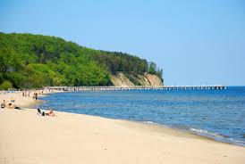

×
Gdynia
Plaża w Śródmieściu jest najbardziej popularną plażą w Gdyni. Kąpielisko wydzielone na szerokości 200 m, jest strzeżone do końca sierpnia. Do plaży można w łatwy sposób dostać się prawie z każdej części miasta. Podróżować można autobusem, trolejbusem, zaś odległość z przystanku SKM to ok. 10-15 minut pieszo. 
×
Sopot
Plaża sąsiadująca ze słynnym "Monciakiem". Moc atrakcji dla dzieci jak i dorosłych. Główną atrakcją jest najdłuższe molo w Polsce. Plaża jest strzeżona w sezonie wakacyjnym. Sopot jest najbardziej znaną trójmiejską plażą. Co roku przyjeżdżają do uzdrowiska tysiące ludzi pragnących relaksu na najwyższym poziomie. Jest także plażą, na którą najłatwiej trafić. Wystarczy wsiąść w Szybką kolej miejską i w ciągu kilku(nastu) minut jesteśmy na miejscu. Potem wystarczy zejść w dół sławnego już monciaka i możemy szukać dogodnego miejsca, gdzie można by rozłożyć kocyk i opalać się do wieczora. Jeśli ktoś chciałby się wybrać samochodem, może zostawić auto na jednym z czterech płatnych parkingów. Dwa z nich znajdują się zaraz przy dworcu, dwa kolejne zarz przy plaży. Należy także pamiętać, że na większości ulic w centrum Sopotu parkowanie jest płatne
×
Hel
Najwięcej słonecznych dni w roku (aż 70), ale za to wiatr wieje tu najsilniej. Plaża na cyplu helskim jest miejscem, w którym zaczyna się Polska. Stanowi kraniec długiego na ponad 30 km półwyspu (mierzei) Helskiej. Kąpielisko ma długość 100 metrów (plaża 1 km), a szerokość 30 m. Piasek plaży jest czysty i biały, należy jednak uważać na prądy morskie na krawędzi cypla. Na terenie kąpieliska są toalety, żeby dojść do plaży na cyplu od strony otwartego morza trzeba przejść przez odcinek lasu, jedno wejście. Ale wówczas dojdziemy do bardzo szerokiej i nieco mniej uczęszczanej plaży. Ok. 400 m od plaży znajdziemy obiekty gastronomiczne. Na plażę z centrum można dojść w 12 minut.
×
Dębki
Plaża w Dębkach jest najładniejszą plażą w Polsce. Potwierdzają to rankingi (także światowe). Jest także bardzo szeroka - ma ok. 108 m szerokości (szersza jest tylko w Świnoujściu 320 km za zachód ). Piasek na plaży w Dębkach "łączy złocisty kolor z idealną konsystencją" - jak mówią fachowcy. Faktem jest, że jest on miły w dotyku, czysty, przyjemny. Dębki mają także inną zaletę - nadal jest to niewielka miejscowość, a plaża jest długa i szeroka. Dzięki temu nawet w sezonie nie ma tu tłoku. A gdy potrzebujemy wręcz samotności znajdziemy i takie miejsca. Długa na ok 3 km plaża oferuje olbrzymie możliwości ! Z każdego miejsca w Dębkach do plaży dojdziemy w max. 15 minut. Ale możemy także dojechać: meleksem, rowerem, hulajnogą, skuterem (to wszystko można wypożyczyć w Dębkach). Plaża w Dębkach rozciąga się pomiędzy 18 a 26 wejściem. Każde z wejść jest inne, ma swój charakter i klimat. Wejście nr 18: nieco oddalone od 'centrum' Dębek ok 12 min spacerem, zawsze dość puste. Można tu wprowadzać psy. Wejście 19: Szerokie wejście wyłożone kostką brukową - idealne dla wózków. Tu znajduje się Cooler Beach Bar, który w sezonie otwarty jest 24h/doba ! Wejście 20: Nieco ukryte, mało uczęszczane Wejście 21: Tu dzieje się dużo. Przede wszystkim jest tu KONTENER Dębki - klimatyczne i bezpieczne miejsce - letni beach bar z dobrą muzyką, świetną atmosferą i wspaniałymi ludźmi. Idealne miejsce do plażowania w dzień i imprez w nocy. Są także trampoliny, skutery itp Wejście 22: Wąskie przejście, niewygodne ale przepiękne :) Wejście 23: Latem stoi tu mały bar - ale dość drogi :) Wejście 24: Ujście rzeki Piaśnicy. Fani Dębek doskonale znają to przepiękne miejsce !! Wejście 25: Za Piaśnicą - trzeba przejść mostkiem lub pokonać rzeczkę. Mało uczęszczane Wejście 26: Dojście od strony drogi mocno zagmatwane, kilka razy zakręca. tu plaża robi się wyraźnie węższa. W tej okolicy zaczyna się znana na całą Polskę plaża naturystów w Dębkach.
×
Jastarnia
W Jastarni plaże znajdują się zarówno nad otwartym Bałtykiem jak i nad Zatoką Pucką. Plaże od strony morza są szersze i aby do nich dotrzeć trzeba przejść przez sosnowy las. Nie jest to oczywiście duża odległość. Na strzeżone fragmenty plaż prowadzą zejścia od ulic: Zdrojowej, Nadmorskiej, Ogrodowej i Leśnej. Dla wczasowiczów z czworonogami udostępniono sektor plaży pomiędzy Jastarnią i Juratą (zejście nr 55). Z kolei plaże od strony zatoki są węższe, ale działa tam wiele szkół i wypożyczalni sprzętu windsurfingowe
×
Kołobrzeg
W Kołobrzegu na plaży można wynająć kosze plażowe, leżaki i inne utensylia uprzyjemniające plażowanie. Dla dzieci jest tu dużo atrakcji - nadmiar energii mogą wyładować na dmuchanych zabawkach: trampolinach, zjeżdżalniach itp. Rodzice natomiast mogą korzystać z usytuowanych gdzieniegdzie plażowych barów. Jednak najczęstszym celem kołobrzeskich, plażowych spacerów jest molo oraz ujście rzeki Parsęty, gdzie statki wpływają do portów. Ci, którzy nie lubią spacerów po piasku, mogą oglądać morze spacerując po nadmorskiej promenadzie, wybudowanej na wzmocnionej wydmie równolegle do plaży.
GDYNIA
SOPOT
HEL
DĘBKI
JASTARNIA
KOŁOBRZEG